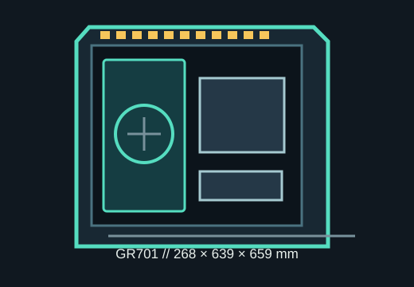

[ MODEL IDENTIFICATION // ASUS ROG HYPERION GR701 ]
ASUS ROG Hyperion GR701
A large E-ATX full tower with dual 420 mm radiator positions, extensive drive mounting and a maximum 460 mm graphics-card envelope.

FIT NOTE: The published maxima are separate limits. Check the actual radiator, fan, GPU power plug, board width and cable bend together against the GR701 manual.
Dimensions & fit specifications
| External dimensions | 268 × 639 × 659 mm (W × H × D), per ASUS specifications. |
|---|---|
| Motherboards | Mini-ITX, microATX, ATX and E-ATX up to 305 × 277 mm (12 × 10.9 in); wider E-ATX boards may overlap cable openings. |
| GPU / CPU cooler / PSU | GPU length up to 460 mm; CPU air cooler height up to 190 mm; ATX PSU length up to 240 mm. |
| Radiators | Front and top each support up to 420 mm radiators; rear supports up to 140 mm. Space and tube routing depend on radiator thickness, fans and board components. |
| Drive mounts | Five dedicated 2.5-inch mounts and two 2.5/3.5-inch combo bays; drive trays and GPU/radiator assemblies share internal volume. |
| Expansion | Nine horizontal expansion slots plus three vertical positions; vertical mounting requires suitable GPU support and riser hardware. |
Compatibility & preservation
The internal volume suits very large builds, but the 460 mm GPU figure is not a promise that a long card clears every front radiator and fan stack. Confirm card thickness, connector direction, radiator depth and the selected board's E-ATX edge clearance before assembly. ASUS's top/front 420 mm radiator support is position-specific; rear support is 140 mm.
- Retain both glass panels, fan hub, GPU support, accessory box and the model-specific manual.
- Measure the case's passage and doorway clearance before moving this heavy enclosure; remove panels and secure loose trays for transport.
- Check the exact GR701 revision and regional I/O bundle, which may differ from BTF-specific variants.
Manufacturer sources
- ASUS ROG — Hyperion GR701 product pageManufacturer model overview and feature identification.
- ASUS ROG — Hyperion GR701 specificationsManufacturer dimensions, limits, supported boards, cooling and bays; confirm region and revision.
Clearances are manufacturer maxima, not assurances that every combination of maximum-size parts fits at once.